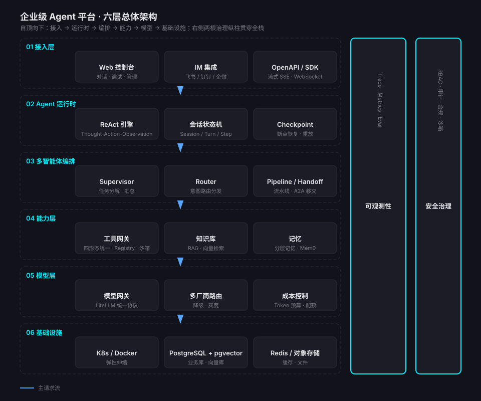
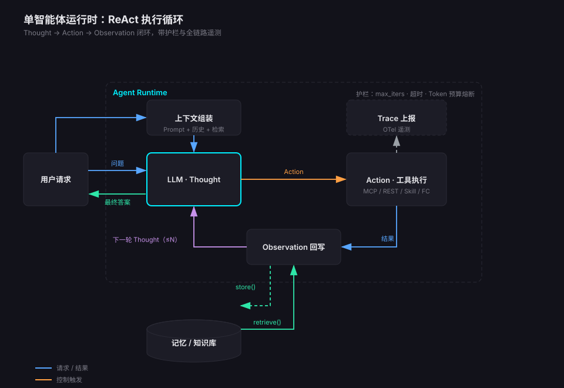
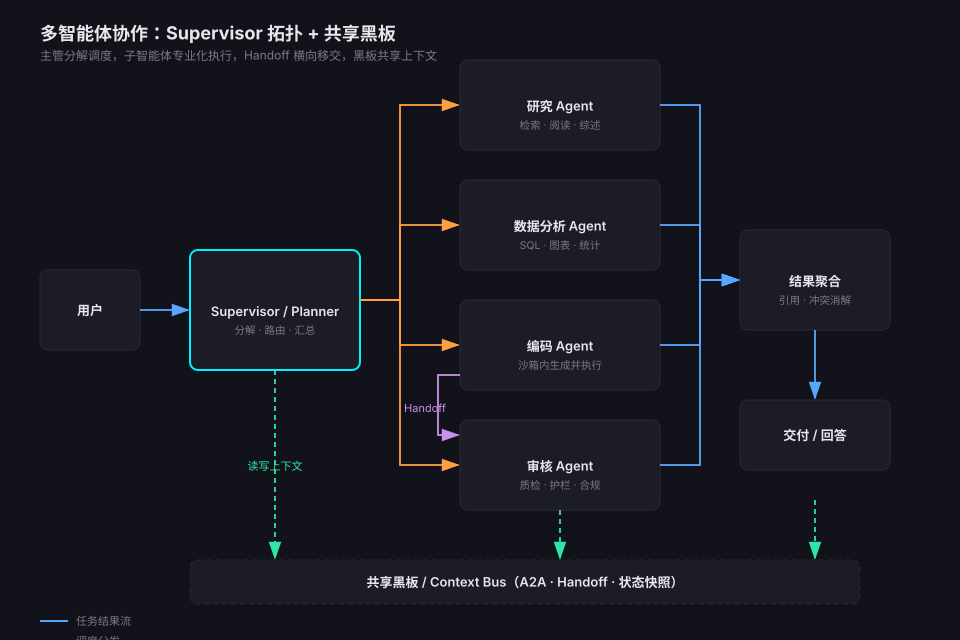
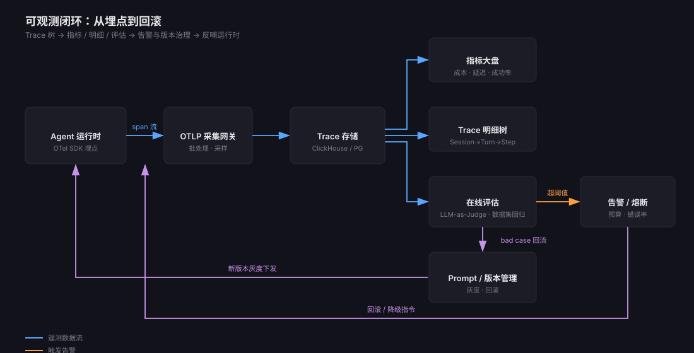
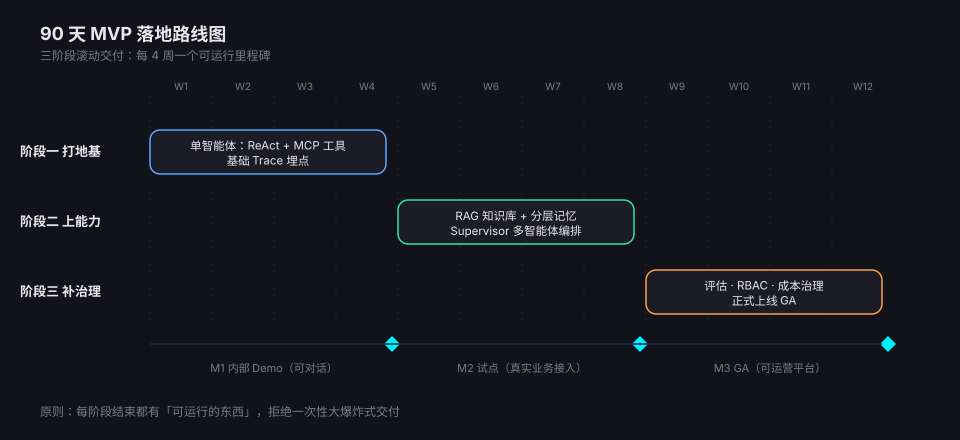

- 先说结论：2026 年的 Agent 市场，「跑通 Demo」已经不是瓶颈，「管住生产」才是。买平台还是建平台，取决于你的差异化在业务流还是在智能体本身
- 一套骨架管全程：六层总体架构（接入 / 运行时 / 编排 / 能力 / 模型 / 基础设施）+ 可观测与安全治理两根纵柱，MVP 与终态共用同一张图，只是每层厚度不同
- 三个决定生死的模块：ReAct 运行时的护栏设计、工具层「Function Call / REST / MCP / Skill」四形态统一网关治理、可观测的「埋点→评估→回滚」闭环——缺一个都上不了生产
- 90 天可落地：三阶段各 4 周，每阶段结束必须有一个「可运行的东西」，拒绝大爆炸式交付
先看市面：四大流派的落地与成熟度
动手建平台之前，必须先回答一个问题：市面上这些框架和平台，到底成熟到什么程度了？哪些坑已经被踩平，哪些坑还得自己跳？把 2026 年的玩家摆开看，大致是四个流派：
| 流派 | 代表产品 | 成熟度 | 适合谁 | 短板 |
|---|---|---|---|---|
| 低代码平台型 | Coze / Dify / n8n | 生产就绪度高 | 中小团队快速搭知识库问答、内部助手、轻量自动化 | 深度定制受限，复杂编排和精细治理做不了 |
| 代码框架型 | LangGraph / CrewAI / AutoGen / OpenAI Agents SDK | 工业级稳定性（LangGraph） | 有专职算法工程团队、要突破功能瓶颈的大型研发组织 | 研发与运维人力开销大，权限、审计等企业件基本要自研 |
| 云托管服务型 | Bedrock AgentCore / Vertex AI Agents / 百炼 | 快速验证成熟 | 已深度绑定某朵云、要内置连接器与合规审计日志的企业 | 厂商锁定，规模化后 API 成本显著上升，数据出域受限 |
| 合规私有化型 | 360智语 / 各政企定制平台 | 高保密场景成熟 | 党政军、央国企、金融能源等强监管行业 | 无开源版本，实施成本高，技术迭代跟随厂商 |
一个反复出现的横评结论是：赛道已经「分层落地」，没有最好的框架，只有最合适的工程路径。零基础求快上 Coze，中小团队要私有化选 Dify，复杂流程深度自研用 LangGraph，强监管行业买合规平台。
1.1 Demo 到生产之间隔着什么
几乎所有团队都会撞上同一堵墙：周末用 LangGraph 拼出一个惊艳的 Demo，上线三个月后没人说得清它为什么答错、这个月花了多少钱、哪个环节在拖慢。横评里被反复点名的差距有五个：
- 状态管理：长程交互需要结构化 Session 追踪，靠上下文窗口硬扛必然溢出
- 可观测：Agent 是多步随机系统，没有 Trace 就等于蒙眼运营
- 成本：Token 消耗、重试放大、多智能体的对话开销，没有预算闸门就是无底洞
- 安全：工具执行要容器隔离，外部接口要防注入，数据出境要守红线
- 评估：模型换代、Prompt 改动之后，没有回归评估集就不敢发布
总体架构：六层模型 + 两根纵柱

这张图同时是 MVP 的施工图和终态的蓝图——区别只在每层的「厚度」。逐层说职责与关键设计决策：
- L1 接入层：Web 控制台（对话、调试、管理三合一）、IM 集成（飞书/钉钉/企微机器人）、OpenAPI + SDK。设计要点：所有入口收敛为同一种「会话」抽象，流式输出用 SSE，长任务用 WebSocket 或回调
- L2 Agent 运行时：平台的心脏。ReAct 引擎、会话状态机（Session / Turn / Step 三级）、Checkpoint 断点恢复。设计要点：运行时对上层协议无感、对下层模型无感，只管「一次推理循环怎么跑」
- L3 编排层：单 Agent 不够时才有意义。Supervisor（主管分解）、Router（意图路由）、Pipeline / Handoff（流水线与移交）。设计要点：编排是运行时的组合器，不是另一套引擎
- L4 能力层：工具网关（Function Call / REST / MCP / Skill 四形态统一接入 + Registry + 沙箱）、知识库（RAG）、记忆（分层记忆）。设计要点：三类能力都以「服务」形式暴露，禁止业务代码绕过网关直连工具
- L5 模型层：模型网关（LiteLLM 统一协议）、多厂商路由与降级、Token 预算与配额。设计要点：应用永远调用「逻辑模型名」（如 smart / fast / cheap），物理模型映射收在网关里，换模型不改代码
- L6 基础设施：K8s/Docker、PostgreSQL + pgvector、Redis、对象存储。设计要点：MVP 阶段一个 Postgres 打三份工（业务库 + 向量库 + Trace 存储），别过早上分布式
两根纵柱是「企业级」三个字的真正含义：可观测性（Trace / Metrics / Eval，第 7 节展开）决定你敢不敢上线，安全治理（RBAC、审计、合规、沙箱）决定你能不能过审。它们不是某一层，而是每一层都要交代的横切面。
单智能体运行时：把 ReAct 做成引擎

ReAct（Reason + Act）不是什么新东西，但把它从「一个 Prompt 模式」做成「一个引擎」，是平台和玩具的分水岭。核心循环不到 40 行：
骨架之外，决定生产质量的是四个设计决策：
- 三级状态模型：Session（一次会话）→ Turn（一次用户输入触发的完整循环）→ Step（一次推理迭代）。评估、计费、审计、重放全部挂在 Step 上，粒度不够就查不清问题
- 上下文工程优先于模型升级：历史超窗时用「截断 + 摘要」而不是无脑塞满；检索结果进上下文前做去重与相关性截断，这是延迟和成本的第一杠杆
- 护栏必须是引擎内建：max_iters、单步超时、Token 预算、循环检测（同一工具同一参数连续调用即熔断）。靠 Prompt 里写「请不要重复调用」是管不住的
- Checkpoint 每一步落盘：长任务跑 20 分钟挂了，能从断点恢复和从头重跑，是两个量级的产品体验
多智能体协作：先忍住，再出手

横评数据里有一条冷静的共识：多智能体的 Token 开销和调试复杂度都是成倍增长的（AutoGen 类「多角色对话」方案尤其烧钱）。所以第一原则是：单 Agent + 好工具能解决的，绝不上多 Agent。确实需要时，按场景选拓扑：
| 拓扑 | 运转方式 | 适用场景 | 代价 |
|---|---|---|---|
| Supervisor | 主管分解任务、分派子 Agent、汇总结果 | 异构任务（研究+数据+编码），需要统一出口质量 | 主管成为瓶颈与成本大头 |
| Pipeline | 固定顺序流水线，上一环输出即下一环输入 | 流程确定的生产任务（撰稿→审校→合规） | 灵活性最差，环节失败要整链重跑 |
| Router | 前置路由按意图分发给专家 Agent | 多业务域共用入口（客服分诊） | 路由错了后面全错，需持续调路由 |
| Swarm / Handoff | Agent 之间点对点移交控制权与上下文 | 探索型协作、职责边界模糊的任务 | 最难调试，环路风险最高，生产慎用 |
工程要点三条：
- 上下文隔离：子 Agent 只拿自己任务相关的上下文切片，禁止全员共享整段对话——这既是成本控制，也是防止互相污染推理
- 共享黑板：跨 Agent 的事实与中间产物写入黑板（本质是一张带版本的状态表 + 消息总线），交接用结构化 Handoff 载荷（任务、上下文引用、验收标准），不要用自然语言口口相传
- 协议选择：同进程编排用 LangGraph 的 subgraph / Command 机制即可；跨团队、跨进程的 Agent 互操作盯住 A2A 类开放协议，但 2026 年它仍在早期，内部系统不必强上
工具层：四种工具形态，一个网关
聊工具层很容易条件反射地只想到 MCP，但企业现实里的工具形态远比这丰富：存量系统本来就是 REST 接口，模型厂商原生自带 Function Call，Skill 生态在 2026 年成了第二类能力形态，MCP 则是新增 Agent 工具的事实标准。成熟平台不押注单一形态，而是把四种形态收敛进同一个网关：
| 形态 | 本质 | 典型场景 | 优势 | 短板 |
|---|---|---|---|---|
| Function Call | 模型原生工具调用（JSON Schema 声明） | 会话内轻量动作：查订单、算汇率、生成结构化输出 | 零协议开销，所有主流模型兼容 | schema 散在各厂商 API 里，没有统一注册与授权 |
| HTTP REST / OpenAPI | 把存量企业接口包装成工具 | 对接 OA / CRM / 工单 / 库存等已有系统 | 目标系统零改造，OpenAPI spec 可自动导入为工具定义 | 接口为人设计：返回体大、字段冗余，截断与裁剪要自己做 |
| MCP | Client-Server 工具协议 | 生态化接入：搜索、数据库、浏览器、云服务、官方行业包 | 标准化发现 / 鉴权 / 流式，生态最活跃 | 协议本身不管治理，网关、限流、审计仍要自建 |
| Skill | 指令 + 脚本 + 资源的能力包 | 流程化能力：文档生成、代码评审规范、领域方法论 | 给 Agent 注入「程序性记忆」，跨团队复用 | 占用上下文，效果必须靠评估验证 |
四种形态在网关里收敛为一套治理模型：
- Tool Registry 统一抽象：Function Call 的 schema、REST 的 OpenAPI 文档、MCP server 的工具列表、Skill 包的元数据，注册进同一张表——风险等级、权限要求、超时、限流、计费维度。运行时按 Agent 声明的工具白名单暴露，LLM 永远看不到未授权工具的 schema，也不需要知道调用背后是 REST 还是 MCP，执行器（executor）按形态适配；一次响应里的多个 tool_calls 并行执行、设并发上限，否则串行等待会把延迟乘倍数放大
- Tool 与 Skill 互补：Tool 是「一次调用」，Skill 是「怎么做一串事」。skills.sh 生态爆发（find-skills 安装量已破 3.8M）之后，Skill 事实上成了工具之外的第二类能力，平台要提供 Skill 的安装、版本管理与启用审计，而不是让每个人往项目里手拷 markdown
- 沙箱执行：代码执行、文件操作类工具一律进容器沙箱，网络白名单 + 资源限额 + 执行时限。这是横评里「沙箱安全需额外配置」这个坑的标准解法
- 结果治理：工具返回值先截断/摘要再进上下文（一个搜索工具返回 50KB HTML 是最常见的成本炸弹）；工具报错要作为 Observation 回写给模型换策略，而不是抛异常打断整个 Turn；重试只对幂等调用开放（GET 或带幂等键的写），无幂等键的写操作自动重试会制造重复下单、重复发消息——比失败更糟的事故
- 注入防线：工具返回的内容是「数据」不是「指令」，在 Prompt 组装时用分隔符与系统指令隔离，并对高危工具（写操作、支付、发消息）加人工审批闸门
- 凭证代持：工具所需的 API Key / OAuth 令牌由网关侧保管（Vault / KMS），只在真正发起调用的那一刻注入，绝不进 Prompt、模型上下文或日志——凭证一旦进入上下文，就等于交给了一个不可控方
知识库与记忆：RAG 打底，分层记忆升级
知识库解决「组织知道什么」，记忆解决「这个 Agent 和用户之间发生过什么」。两者常被混为一谈，工程上必须分开建设。
6.1 RAG 流水线
标准五段：解析 → 切分 → 嵌入 → 混合检索 → 重排。2026 年的务实组合：文档解析用带版面理解的解析器（表格/图片是重灾区），切分按语义结构（标题层级）而非固定字数，检索用向量 + BM25 混合，再叠一跳 cross-encoder 重排，向量库 MVP 直接用 pgvector。腾讯 WeKnora 这类「原始文档一键变可查询 RAG + 自维护 Wiki」的产品形态值得参考——把知识库做成有维护闭环的资产，而不是一次性索引。还有一条企业红线：检索必须按提问者身份做文档级权限过滤（ACL 跟着 query 走，而不是跟着文档入库走），否则知识库会成为全公司最大的越权泄露面——模型会替问不到的人，把答案说出来。
6.2 四层记忆模型
| 记忆层 | 载体 | 生命周期 | 典型操作 |
|---|---|---|---|
| 工作记忆 | 当前上下文窗口 | 单 Turn | trim() / summarize() |
| 情景记忆 | 会话历史 + 摘要（Postgres） | 跨会话 | append() / recall() |
| 语义记忆 | 事实与偏好（向量库 + 实体图） | 长期 | store() / retrieve() / forget() |
| 程序性记忆 | Skill / 工具使用经验 | 长期 | consolidate() / promote() |
趋势上，Agent Memory 已经从论文走进排行榜：记忆系统（hindsight）、会话记忆插件（claude-mem）连续数周霸榜 GitHub Trending，「会学习的记忆」正在成为运行时的标配组件。落地建议：MVP 先做情景记忆（会话摘要持久化）+ 语义记忆（用户偏好、项目事实的抽取与检索，Mem0 模式：LLM 负责从对话里抽取、去重、更新事实），程序性记忆放到平台二期再碰——它需要评估体系先行，否则「学到的经验」无法验证好坏。
可观测性：从埋点到回滚的闭环

「Agent 上线三天翻车了都不知道哪步错的」——这是今年技术博客里出现频率最高的标题之一。可观测不是加个日志，而是建一条从埋点到回滚的闭环链路：
- 埋点：按 OpenTelemetry GenAI 语义约定打 span，层级严格对应 Session → Turn → Step → (LLM call / Tool call / Retrieval)。LangGraph 等框架自带 instrumentation，自研运行时用 OTel SDK 手工埋，一个 Step 都不能少
- 采集与存储：OTLP 网关批处理上报，指标可以降采样，但 Trace 要全量落库（ClickHouse 规模化 / Postgres MVP）+ TTL 分级留存——采样一旦落在 span 层，bad case 就会随机丢失，事后无从归因。Prompt/Completion 全文脱敏后存，没有原文等于没埋点
- 消费三路径：指标大盘（成功率、P95 延迟、Token 成本、平均迭代数——Agent 的四个黄金信号）；Trace 明细树（逐 Step 下钻，回答「它为什么这么答」）；在线评估（抽样流量跑 LLM-as-Judge + 规则断言）
- 反馈两回路：bad case 一键回流成评估集样本；新版本（Prompt / 模型 / 工具）必须先过评估集回归，再灰度，再全量，出问题一键回滚到上一版 Prompt
技术选型：一套开源组合拳
把前面所有模块落到具体的名字上。原则：每层选「社区已验证 + 可替换」的件，任何一项都有 Plan B：
| 层 | MVP（1-3 人，4-8 周） | 演进（团队化生产） | 替换判据 |
|---|---|---|---|
| 接入 | FastAPI + SSE | + WebSocket / IM bot SDK | 需要长任务推送时 |
| 运行时 | 自研 ReAct 引擎（约 200 行） | LangGraph（状态机+checkpoint 现成） | 分支/并行/恢复语义复杂到自研维护不动时 |
| 编排 | Supervisor 单拓扑 | LangGraph subgraph / Command | 第二拓扑有真实需求时再加 |
| 工具 | 静态注册表 + FC/REST/MCP 混挂 | Tool Registry + 容器沙箱 + 审批闸门 | 接入写操作工具那天 |
| 知识库 | pgvector + 混合检索 | Qdrant / Milvus + rerank 模型 | 向量 > 千万或召回质量到瓶颈 |
| 记忆 | 会话摘要表 + 事实表 | Mem0 模式（LLM 抽取-去重-更新） | 跨会话个性化成为刚需 |
| 模型 | LiteLLM 网关 | + 多厂商路由 / 降级 / 预算配额 | 第二个模型供应商接入时 |
| 观测 | Langfuse 自托管 | OTel Collector + ClickHouse + Eval 流水线 | Trace 量级过亿 span/天 |
| 部署 | Docker Compose 单机 | K8s + HPA + 队列（Redis/Stream） | 并发长任务排队成为常态 |
90 天 MVP：三阶段路线图

- 阶段一（W1-W4）打地基：FastAPI + 自研 ReAct 循环 + 3 个工具（Function Call / REST 包装 / MCP server 各一）+ Langfuse 埋点 + Postgres 会话表。验收：一个能查资料、调工具、带 Trace 的单 Agent，内部 Demo 日人人可玩
- 阶段二（W5-W8）上能力：RAG 流水线接入部门文档、会话摘要持久化 + 事实记忆、Supervisor 编排两个专家子 Agent。验收：真实业务问题端到端解决率可量化（先定基线，比如 60%）
- 阶段三（W9-W12）补治理：评估集（≥200 条真实 case）+ LLM-as-Judge 回归、RBAC 与工具审批闸门、Token 预算与配额、LiteLLM 双厂商路由降级、Docker→K8s 部署。验收：一次模型切换在评估集上验证后灰度上线，全程未改行业务代码
三条纪律比计划本身更重要：每阶段末必须「可运行、可演示、可回退」；评估集从第一周就开始积累（bad case 随手归档，别等第三阶段补）；可观测先于功能——任何新能力上线时它的 span 必须已经在报。
避坑指南：生产环境最常见的 8 个坑
| # | 坑 | 症状 | 对策 |
|---|---|---|---|
| 1 | 成本失控 | 月底账单 surprise，单会话 Token 无上限 | Turn 级预算熔断 + 逻辑模型分级路由 + 结果截断 |
| 2 | 上下文溢出 | 长会话答非所问、延迟暴涨 | 截断窗口 + 滚动摘要，检索结果相关性截断 |
| 3 | 循环卡死 | 同一工具反复调用，迭代数打满 | max_iters + 重复调用检测熔断 + 降级话术 |
| 4 | 注入攻击 | 工具返回内容劫持 Agent 行为 | 数据/指令分隔 + 高危工具人工审批 + 沙箱 |
| 5 | 评估缺位 | 换模型后质量下滑一周才被发现 | 评估集回归作为发布门禁，LLM-as-Judge 抽样在线跑 |
| 6 | 框架锁定 | 业务逻辑与某框架 API 深度耦合 | 业务只依赖平台的 Agent/Tool/Memory 抽象接口 |
| 7 | 伪多智能体 | 三个 Agent 干一件事，成本×3 质量没变 | 先单 Agent + 好工具，指标不达标再拆 |
| 8 | 合规裸奔 | 审计问「这条回答怎么来的」答不出 | Trace 全留存 + Prompt 版本化 + 数据出域白名单 |
结语：平台化是把 Agent 能力产品化
回到最初的问题：为什么要「建平台」而不是「用框架」？框架解决的是「一个 Agent 怎么跑」，平台解决的是「一百个 Agent 怎么被开发、被信任、被运营」。六层架构里真正难的从来不是 ReAct 循环那 40 行代码，而是三件工程化的事：让每一步可追溯（可观测闭环）、让每一次变更可验证（评估门禁）、让每一个能力可复用（工具与记忆的服务化）。这三件事做到，Demo 和生产之间的那堵墙，才算真正翻过去。
延伸阅读
- 本站前作：AI凭什么自己干活，8大架构一次讲透——ReAct 等 8 大 Agent 架构与多智能体拓扑的完整地图
- 本站前作：从Prompt到Loop：AI工程师的四级进化与落地实践——本文「模型外工程」视角的角色分工版
- 本站前作：主子Agent动态编排怎么实现？5阶段全链路实战——Supervisor 编排的落地细节
- 本站前作：93%的AI项目卡在最后一公里，这样破局——评估门控部署的实战视角
- 趋势参考：本周趋势发现——Agent 记忆（claude-mem / hindsight）与官方行业 Skill 包的霸榜动态